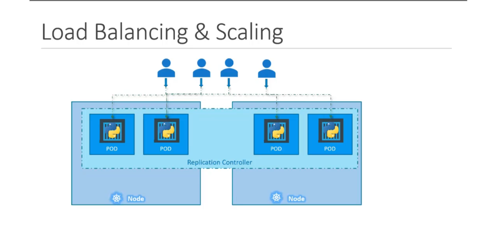

"người hùng" thầm lặng của Kubernetes, giúp ứng dụng của bạn luôn sẵn sàng và có thể mở rộng. Đó chính là Replication Controller và "hậu duệ" của nó, ReplicaSet.
1. Tại sao cần "Nhân bản" (Replication)? 🤔¶
Trong thực tế, việc chỉ chạy một Pod duy nhất cho ứng dụng của bạn rất rủi ro. Chúng ta cần "nhân bản" vì hai lý do chính:
-
Tính Sẵn sàng cao (High Availability):
-
Nếu một Pod bị lỗi hoặc "chết", ứng dụng của bạn sẽ ngừng hoạt động.
-
Bằng cách chạy nhiều bản sao (replicas) của Pod, nếu một Pod gặp sự cố, những Pod còn lại vẫn tiếp tục phục vụ người dùng. Controller sẽ tự động tạo một Pod mới để thay thế Pod đã hỏng.
-
Cân bằng tải & Mở rộng quy mô (Load Balancing & Scaling):
-
Khi lượng người dùng tăng lên, một Pod có thể bị quá tải.
- Bằng cách tạo thêm nhiều Pod, bạn có thể phân bổ (load balance) lượng truy cập trên nhiều Pod, giúp ứng dụng chạy mượt mà hơn và có thể xử lý nhiều yêu cầu hơn.
- nếu số lượng pod trong 1 node nặng quá thì nó đưa sang node khác để 
{kind=link}
2. Replication Controller vs. ReplicaSet¶
Cả hai đều có cùng mục đích: đảm bảo một số lượng Pod nhất định luôn chạy. Tuy nhiên:
- Replication Controller: Là công nghệ cũ hơn.
- ReplicaSet: Là công nghệ mới hơn và được khuyến khích sử dụng.
Trong bài này và về sau, chúng ta sẽ tập trung vào ReplicaSet.
3. "Giải phẫu" một file YAML của ReplicaSet 🧬¶
Để tạo một ReplicaSet, chúng ta sẽ định nghĩa nó trong một file YAML. Cấu trúc của nó rất giống với Pod, nhưng có thêm vài phần quan trọng:
apiVersion: apps/v1 # Khác với Pod (v1)
kind: ReplicaSet
metadata:
name: myapp-replicaset
labels:
app: myapp
spec:
replicas: 3 # 1. Số lượng bản sao mong muốn
selector: # 2. "Bộ lọc" để tìm Pod, BẮT BUỘC
matchLabels:
app: myapp
template: # 3. "Khuôn mẫu" để tạo Pod mới
metadata:
labels:
app: myapp
spec:
containers:
- name: nginx-container
image: nginx
Hãy "mổ xẻ" phần spec:
replicas: Bạn muốn có bao nhiêu bản sao của Pod đang chạy. Trong ví dụ này là3.selector: Đây là phần cực kỳ quan trọng và bắt buộc trong ReplicaSet. Nó giúp ReplicaSet biết được "những Pod nào thuộc về mình".matchLabels: ReplicaSet sẽ tìm tất cả các Pod có nhãn (label) khớp với những gì được định nghĩa match ở chỗ template , phần tạo ra pod ấy (trong ví dụ làapp: myapp). (lưu ý label gắn cho chính bản thân ReplicaSet , giống như "tag" để: Nhận diện ReplicaSet dễ hơn thôi)template: Đây chính là "khuôn mẫu" định nghĩa Pod. Nếu ReplicaSet thấy số lượng Pod hiện tại ít hơnreplicas, nó sẽ dùng "khuôn" này để tạo ra Pod mới. Về cơ bản, bạn có thể sao chép phầnmetadatavàspeccủa một file định nghĩa Pod vào đây.
4. Cơ chế "Kỳ diệu" của Labels và Selectors 🏷️🔎¶
- Labels (Nhãn): Là các cặp key-value bạn gắn vào các đối tượng (như Pod) để phân loại chúng.
- Selectors (Bộ chọn): Là cách các đối tượng khác (như ReplicaSet, Service) tìm và làm việc với các đối tượng có nhãn tương ứng.
Mối quan hệ này là "xương sống" của Kubernetes. ReplicaSet dùng selector để "quản lý" các Pod có labels phù hợp.
Câu hỏi hay: Nếu Pod đã tồn tại sẵn, ReplicaSet có cần
templatekhông? CÓ! Vì nếu một trong các Pod đó bị lỗi trong tương lai, ReplicaSet cầntemplateđể biết cách tạo ra một Pod mới thay thế.
5. Mở rộng quy mô (Scaling) ReplicaSet 📈¶
Khi bạn muốn thay đổi số lượng replicas (ví dụ từ 3 lên 6), có hai cách chính:
-
Cách 1 (Declarative - Khai báo):
-
Sửa giá trị
replicastrong file YAML (ví dụ:replicas: 6). -
Chạy lệnh:
kubectl replace -f <tên-file.yaml> -
Cách 2 (Imperative - Mệnh lệnh):
-
Dùng lệnh
kubectl scaletrực tiếp: -
Lưu ý: Cách này chỉ thay đổi trạng thái hiện tại của ReplicaSet trên cụm, nó không cập nhật lại file YAML gốc của bạn.
- nếu update image qua edit hay qua file . Muốn cập nhật, bạn phải xóa Pod cũ để nó tạo Pod mới với image mới. qua deployment sẽ xịn hơn
6. "Chốt hạ" cho Kỳ thi CKA 📝¶
- ReplicaSet có nhiệm vụ duy trì một số lượng Pod ổn định.
- Cơ chế cốt lõi là sự kết hợp giữa
labels(trên Pod) vàselector(trong ReplicaSet). - Nắm vững các trường bắt buộc trong file YAML của ReplicaSet:
apiVersion: apps/v1,kind: ReplicaSet,metadata, và mộtspecchứareplicas,selector, vàpod template. - Biết cách scale một ReplicaSet bằng cả
kubectl replacevàkubectl scale.
ReplicaSet Demo - Detailed Commands and Examples¶
1. View ReplicaSets¶
List all ReplicaSets¶
Output example:
View with more details¶
Output example:
NAME DESIRED CURRENT READY AGE CONTAINERS IMAGES SELECTOR
new-replica-set 3 3 3 5m nginx nginx:1.20 app=nginx
2. Describe ReplicaSet¶
Output example:
Name: new-replica-set
Namespace: default
Selector: app=nginx
Labels: <none>
Annotations: <none>
Replicas: 3 desired | 3 updated | 3 total | 3 available | 0 unavailable
Pod Template:
Labels: app=nginx
Containers:
nginx:
Image: nginx:1.20
Port: 80/TCP
Host Port: 0/TCP
Events:
Type Reason Age From Message
---- ------ ---- ---- -------
Normal SuccessfulCreate 5m replicaset-controller Created pod: new-replica-set-abc123
3. Edit ReplicaSet¶
Edit interactively¶
This opens the ReplicaSet configuration in your default editor (vi/nano)
Apply changes from file¶
4. Scale ReplicaSet¶
Scale using file¶
Scale using resource name¶
Verify scaling¶
5. Delete ReplicaSet¶
Delete ReplicaSet and its pods¶
Delete ReplicaSet but keep pods¶
6. Complete Demo Workflow¶
Step 1: Create ReplicaSet¶
apiVersion: apps/v1
kind: ReplicaSet
metadata:
name: new-replica-set
labels:
app: nginx
spec:
replicas: 3
selector:
matchLabels:
app: nginx
template:
metadata:
labels:
app: nginx
spec:
containers:
- name: nginx
image: nginx:1.20
ports:
- containerPort: 80
Step 2: Monitor ReplicaSet¶
# Watch ReplicaSet status
kubectl get rs -w
# Check pods created by ReplicaSet
kubectl get pods -l app=nginx
# View detailed information
kubectl describe rs new-replica-set
Step 3: Scale Operations¶
# Scale up to 5 replicas
kubectl scale --replicas=5 rs new-replica-set
# Verify scaling
kubectl get rs new-replica-set
kubectl get pods -l app=nginx
# Scale down to 2 replicas
kubectl scale --replicas=2 rs new-replica-set
Step 4: Test Self-Healing¶
# Delete a pod to test self-healing
kubectl delete pod <pod-name>
# Watch ReplicaSet recreate the pod
kubectl get pods -l app=nginx -w
Step 5: Cleanup¶
7. Useful Additional Commands¶
View ReplicaSet YAML¶
View ReplicaSet JSON¶
Filter by labels¶
View events related to ReplicaSet¶
Monitor resource usage¶
Key Points to Remember¶
- ReplicaSet ensures desired number of pods are running
- Pods are recreated automatically if deleted
- Scaling can be done via file or direct command
- Use labels to identify and group related resources
- Always verify operations with
kubectl getcommands